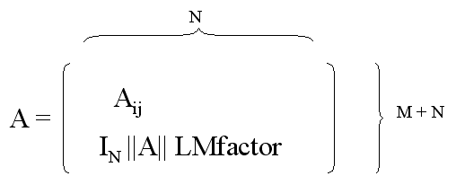

The purpose of the plankton inversion algorithm is to fit the gathered volume backscatter coefficients for multiple frequencies to analytical plankton backscatter models. The data is fitted to each model by the non-negative least squares algorithm (Lawson & Hanson). The model with the smallest residual is selected as the best fit model if the residual is smaller than a configurable maximal residual.
Let an analytical backscatter model be given by σ(f, l), where f is a transducer frequency and l is a plankton size. The models used in this software and their parameters are described in Plankton inversion module.
Let [f1, f2, ..., fM] be the frequencies used, let c = [sv1, sv2, ..., svM] be the measured backscatter for a collection of samples, and let N = [n1, n2, ..., nN] be an abundance vector for an initial size distribution b = l = [l1, l2, ..., lN].
The system of equations to be solved can with respect to the abundance vector N be expressed in matrix form as
A N = c,
where the elements in A, Aij = σ(fi, lj), is the backscatter computed
by the plankton model for frequency number i in c and length number j in b.
Rows are added to the system:
c = [sv1, sv2, ..., svM, 0, ..., 0] (length M + N).
A is extended by a submatrix of size N×N, given by IN × ||A|| × LMfactor,

The solution algorithm is described in (Lebourges 2005). In short, a non-negative least squares inversion is performed for each model with respect to the abundance vector N. After each inversion, the size vector is optimized and a new matrix A is computed based on the new size vector. New inversions are then performed until convergence is reached, or until a maximal number of iterations. After iterating over all the models, the model with the smallest residual is kept if the residual is smaller than a user configured maximal residual.
Each inversion of the system A N = c, gives a best fit solution vector N' which is an approximation for N. The residual is computed as || A N' - c || / || c ||, where the norm is the Euclidean norm.
The purpose of the optimization is to redistribute the size vector around the sizes where non-null abundance has been found. The number of sizes in the size vector is kept constant. If the number of sizes is not a multiple of non-null elements, the elements with the smallest size are divided first.